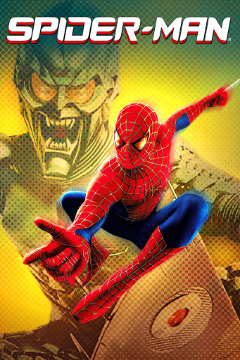
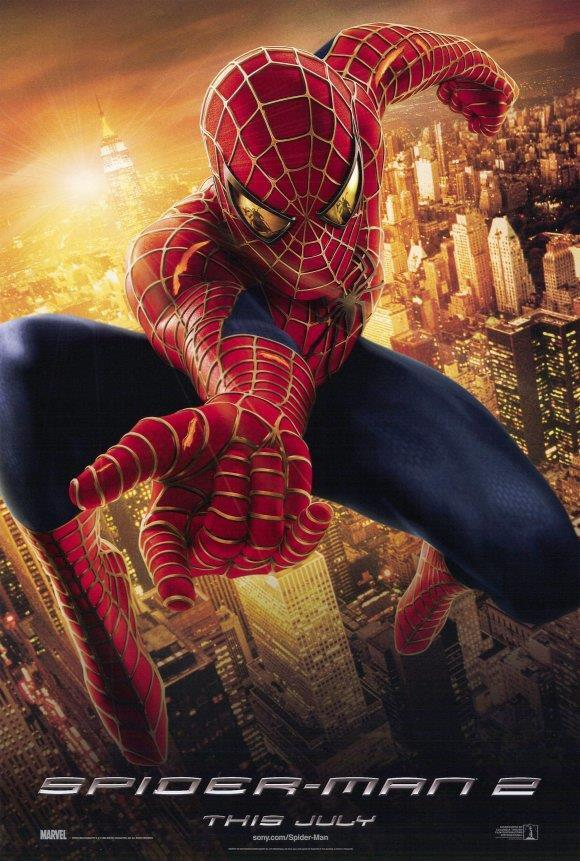
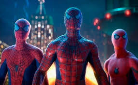

SPIDERMAN

Peter Parker obtiene poderes tras ser mordido por una araña. Su tío Ben muere, enseñándole que "un gran poder conlleva una gran responsabilidad". Mientras tanto, Norman Osborn se convierte en el Duende Verde y aterroriza la ciudad. Spider-Man lo enfrenta y lo derrota, pero Norman muere accidentalmente. Al final, Peter elige ser un héroe y se aleja de Mary Jane para protegerla.
📌 Dirigida por: Sam Raimi
📌 Estreno: 2002
SPIDERMAN 2

Peter Parker lucha por equilibrar su vida y empieza a perder sus poderes. Mientras, el científico Otto Octavius se convierte en Doctor Octopus tras un experimento fallido. Peter deja de ser Spider-Man, pero cuando Doc Ock secuestra a Mary Jane, recupera sus poderes y lo enfrenta. Octavius se redime y se sacrifica para detener su experimento. Mary Jane descubre la verdad y decide estar con Peter, aunque él sigue dudando sobre su futuro como héroe.
📌 Dirigida por: Sam Raimi
📌 Estreno: 2004
SPIDERMAN 3
 Peter Parker enfrenta nuevos desafíos cuando Sandman aparece y descubre que fue el verdadero asesino de su tío Ben. Un simbionte negro lo vuelve más agresivo, afectando su relación con Mary Jane y su amistad con Harry Osborn. Peter se libera del simbionte, pero este se une a Eddie Brock, creando a Venom. Venom y Sandman atacan, pero Peter y Harry (el nuevo Duende) los enfrentan. Harry muere salvando a Peter, Sandman se arrepiente y Venom es destruido. Al final, Peter y Mary Jane intentan arreglar su relación.
Peter Parker enfrenta nuevos desafíos cuando Sandman aparece y descubre que fue el verdadero asesino de su tío Ben. Un simbionte negro lo vuelve más agresivo, afectando su relación con Mary Jane y su amistad con Harry Osborn. Peter se libera del simbionte, pero este se une a Eddie Brock, creando a Venom. Venom y Sandman atacan, pero Peter y Harry (el nuevo Duende) los enfrentan. Harry muere salvando a Peter, Sandman se arrepiente y Venom es destruido. Al final, Peter y Mary Jane intentan arreglar su relación.
📌 Dirigida por: Sam Raimi
📌 Estreno: 2007
SPIDERMAN:NO WAY HOME

Peter Parker pide ayuda a Doctor Strange para que todos olviden su identidad, pero el hechizo falla y villanos de otros universos llegan. Con la ayuda de los Spider-Man de Tobey Maguire y Andrew Garfield, enfrenta a los enemigos y los cura. Tras la muerte de Tía May, Peter acepta que Strange borre todos los recuerdos sobre él, quedando solo, pero sigue siendo Spider-Man.
📌 Dirigida por: Jon Watts
📌 Estreno: 2021
GALERIA